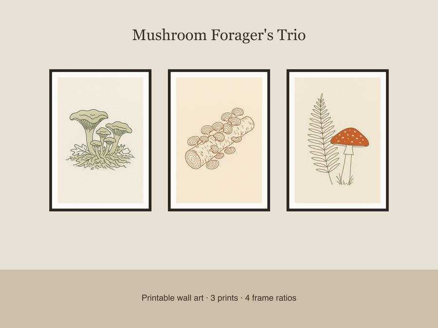

$5.99
View on EtsyBring the hush of a forest walk after rain into your home with the Mushroom Forager's Trio — a set of 3 minimalist line-art botanical prints for cottagecore dreamers and amateur mycologists alike. Thin single-weight ink lines rest on warm cream paper in a muted moss-green and rust-brown palette, with generous negative space that lets each mushroom breathe. What's included: • 3 unique designs — chanterelle cluster in leaf litter (moss-green accent), fallen birch log with turkey-tail shelves (rust & cream tones), solitary fly agaric beside a fern frond (red-orange accent) • Each design in 4 frame-ready ratios: 2x3, 3x4, 4x5, and 11x14 • 12 total high-resolution JPEG files at 300 dpi • Files sized for easy printing at home, at a local print shop, or through an online printing service How to use: Download, unzip, and print! Choose the ratio that matches your frame, then print at home, at a local shop, or through your favorite online printing service. No physical item will be shipped. License: For personal use and small-business commercial use (up to 500 units sold). Please do not resell, redistribute, or share the digital files themselves. Honest disclosure: These designs were created by our small shop with the assistance of AI tools as part of our design process, then refined and prepared for print by hand. 🍄 Thank you for supporting a small shop — happy foraging for your walls!